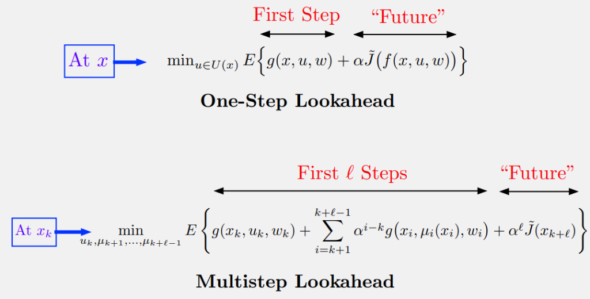

1. Infinite Horizon Stochastic DP Problem
Problem Statement
We aim to minimize the total cost over an infinite number of stages, given by:
\[ J_\pi(x_0) = \lim_{N \to \infty} E_{{w_k}, \: k=0,1,\dots} \left\{ \sum_{k=0}^{N-1} \alpha^k g(x_k, \mu_k(x_k), w_k) \right\} \]- \( J_\pi(x_0) \) is the cost associated with initial state \( x_0 \) and policy \( \pi = \{\mu_0, \mu_1, \dots\} \).
- \( \alpha \) is a discount factor in the interval \( (0, 1] \).
- System equation: \( x_{k+1} = f(x_k, u_k, w_k) \).
- Stochastic disturbances \( w_k \) have a common probability distribution \( P(\cdot | x_k, u_k) \).
2. Value Iteration (VI)
How do we solve this? We can think of it as the limit of finite horizon problems.
The Algorithm
Let \( J_N(x) \) denote the optimal cost of an \( N \)-stage problem. The Value Iteration algorithm generates this cost iteratively:
\[ J_{k+1}(x) = \min_{u \in U(x)} E_w \left\{ g(x, u, w) + \alpha J_k (f(x, u, w)) \right\}, \quad k = 0, 1, \dots \]Starting from \( J_0(x) = 0 \).
Optimal Cost \( J^* \) & Bellman Equation
The optimal infinite horizon cost is the limit \( J^*(x) = \lim_{N \to \infty} J_N(x) \). It satisfies the famous Bellman Equation:
\[ J^*(x) = \min_{u \in U(x)} E_w \left\{ g(x, u, w) + \alpha J^* (f(x, u, w)) \right\} \]Remarks on Bellman Equation
- It is a system of equations (one per state \( x \)).
- If \( \mu(x) \) attains the minimum for each \( x \), then the stationary policy \( \{\mu, \mu, \dots\} \) is optimal.
- The cost \( J_\mu \) of a stationary policy \( \mu \) satisfies: \[ J_\mu(x) = E_w \left\{ g(x, \mu(x), w) + \alpha J_\mu (f(x, \mu(x), w)) \right\} \]
3. Policy Iteration (PI)
Policy Iteration forms the foundation for self-learning in RL.
1. Policy Evaluation
Compute cost \( J_\mu \) of current policy \( \mu \) by solving the Bellman equation for \( \mu \).
Can be done via Monte Carlo simulation (averaging over many trajectories).
2. Policy Improvement
Compute improved policy \( \tilde{\mu} \) via one-step lookahead minimization.
This is also known as the Rollout Algorithm when performed online.
4. Approximation in Value Space
For large state spaces, we use an approximation \( \tilde{J} \) instead of \( J^* \). We then generate controls using Lookahead Minimization.
The Three Approximations
-
(a)
Terminal Cost Approximation \( \tilde{J} \): Replaces the optimal cost \( J^* \). In infinite horizon, we only need one such function (unlike \( N \) functions for finite horizon).
-
(b)
Expected Value Approximation: Replaces the \( E\{\cdot\} \) operation. For example, replacing stochastic disturbances with deterministic values (Certainty Equivalence).
-
(c)
Minimization Approximation: Simplifies the \( \min_u \) operation, especially useful in multiagent systems where the control space is vast.
\( \ell \)-Step Lookahead
Motivation
Why look further ahead? By increasing \( \ell \), we might get better performance even with a less precise approximation \( \tilde{J} \).
Example: In AlphaZero (Chess/Go), a deep multistep lookahead is crucial for effective online play. It also helps with the stability of the policy.
5. Constructing Approximations
Off-line Approximation
Compute \( \tilde{J} \) off-line by solving a simpler problem.
- Simplification: Reduce state space, remove constraints, or assume deterministic dynamics.
- Aggregation: Group states into clusters and solve the aggregate problem.
- Parametric Approximation: Train a neural network \( J(x, r) \) using methods like \( Q \)-learning or TD-methods.
On-line Approximation
Compute values on-the-fly.
- Rollout: Run a "base policy" (heuristic) via simulation to estimate costs.
- MPC: Solve a short-horizon optimization problem online.
Feature Extraction
For parametric approximation, we often extract "features" from the state (e.g., height of columns in Tetris) and learn a function of these features.
6. From Training to Play
Once we have trained a policy \( \mu \) or value function \( \tilde{J} \) off-line, how do we use it?
1. Given a Policy \( \mu \)
Use \( \tilde{J} = J_\mu \) as the terminal cost. Perform one-step or \( \ell \)-step lookahead (Rollout).
2. Given a Value Approx \( \tilde{J} \)
Use \( \tilde{J} \) directly as the terminal cost in lookahead minimization.
3. Truncated Rollout
Run rollout with policy \( \mu \) for some steps, then use \( \tilde{J} \) to approximate the rest (e.g., TD-Gammon).
7. Test Your Understanding
1. Why do we use \( \ell \)-step lookahead instead of 1-step?
2. What is "Certainty Equivalence"?
🔍 Spot the Mistake!
Scenario: A student claims:
"Rollout is an off-line algorithm because it requires simulation."